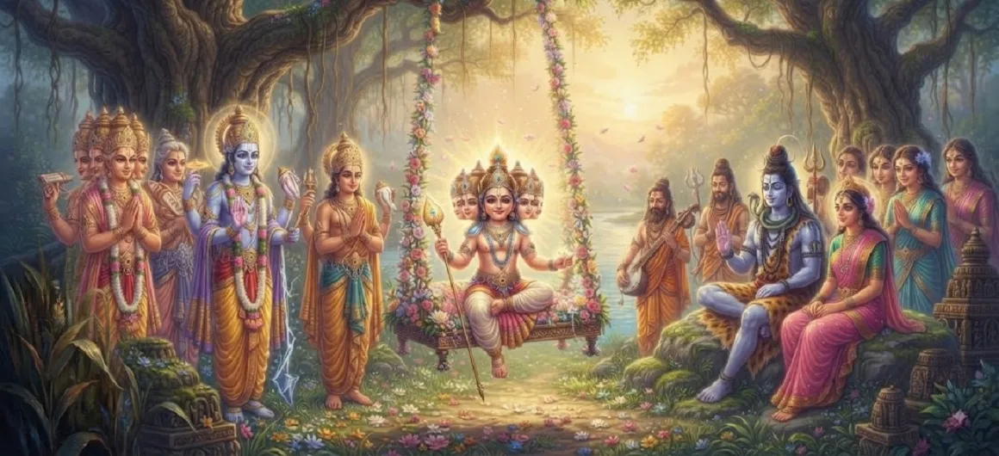

The Gods Behold the Divine Child
Chapter 17 of the Kumara Khanda captures the majestic and long-awaited assembly where the deities, led by Brahma and Indra, journey to Saravana to behold young Kumara in all his peerless splendor.
Filled with awe and renewed hope for the cosmic order, the gods witness the radiant child of Shiva and offer their deepest hymns of praise and reverence.
Chapter 17 Highlights & Full Overview
Grand Deva Assembly
Brahma, Indra, and the devas arriving in Saravana.
Transcendent Radiance
Beholding the breathtaking brilliance of young Skanda.
Reverent Obeisance
Bowing in profound devotion before the future savior.
Celestial Hymns
Chanting powerful prayers praising his cosmic supremacy.
Reed Grove Sanctuary
The sacred grove transformed into a divine court.
Path to Power Reveal
Setting the stage for the unfolding of his peerless powers.
Core Topics Detailed in This Chapter
- 01The Decision of the Gods to Visit Saravana→
- 02The Grand Procession of Devas and Sages→
- 03Arrival at the Sacred Reed Grove→
- 04Beholding the Radiant Form of Kumara→
- 05Hymns of Praise Offered by Lord Brahma and Indra→
- 06The Gracious Acceptance by the Divine Child→
- 07Transition to Chapter 18 (Kumāra’s Powers Revealed)→
1. The Decision of the Gods to Visit Saravana
Tormented for long by the tyranny of Tarakasura and having received word of the miraculous birth and growth of Lord Skanda in the sacred reed grove, the deities gather in heaven under the guidance of Lord Brahma. Realizing that the time has come to secure their liberation and restore cosmic balance, they unanimously resolve to travel directly to Saravana to pay homage to the divine child.
2. The Grand Procession of Devas and Sages
The procession is magnificent and awe-inspiring. Lord Brahma, seated upon his celestial swan, leads the entourage alongside Indra, the king of heaven, mounted on Airavata. Joining them are multitudes of divine sages like Narada, celestial musicians (gandharvas), apsaras, and all the guardian deities of the quarters. Their collective divine energy illuminates the skies, creating an atmosphere of celestial jubilation and profound hope.
3. Arrival at the Sacred Reed Grove
Upon reaching the serene and fragrant boundaries of Saravana, the deities dismount from their celestial vehicles with utmost humility. Stepping softly through the sacred reed beds—the sanctuary where Kumara was nurtured by the Krittikas—they are greeted by an ethereal fragrance and an aura of pure spiritual peace that transcends anything known in the heavenly realms.
4. Beholding the Radiant Form of Kumara
As the divine assembly catches sight of young Kumara playing amidst the thickets, a collective gasp of wonder escapes their lips. The child shines with the blinding brilliance of a thousand suns, yet his expression is infused with innocent charm and boundless compassion. His six faces glow brilliantly, and his youthful form radiates the supreme majesty of Lord Shiva combined with the grace of Parvati.
5. Hymns of Praise Offered by Lord Brahma and Indra
Overwhelmed with deep reverence, Lord Brahma steps forward and leads the gods in chanting profound Vedic hymns. They praise Kumara as the supreme lord of the cosmos, the embodiment of primordial energy, and the destined slayer of Tarakasura. Indra and the other deities bow down completely, placing their crowns at his lotus feet in total surrender and adoration.
6. The Gracious Acceptance by the Divine Child
Aunded by their sincere devotion and desperate plight, young Kumara casts a compassionate glance upon the assembly. With a gentle, reassuring smile on his six faces, he accepts their worship and blesses them, assuring them that their protection and the restoration of righteousness are assured. His divine grace fills every heart with immense strength and courage.
7. Transition to Chapter 18 (Kumāra’s Powers Revealed)
Having witnessed the wondrous form of the divine child and received his supreme reassurance, the gods stand ready for the next monumental revelation. This sets the direct stage for Chapter 18: **Kumāra’s Powers Revealed**, where the full extent of his extraordinary martial and spiritual prowess is formally demonstrated before the entire heavenly court.
Key Teachings and Spiritual Takeaways of Chapter 17
Divine Vision
Beholding the Lord dissolves all fear and despair.
Total Surrender
True liberation begins when ego surrenders to supreme grace.
Power of Prayer
Sincere hymns draw down divine protection and assurance.
Cosmic Order
God manifests whenever righteousness needs restoration.
Radiant Grace
The divine form combines infinite power with soothing love.
Impending Triumph
The assembly of gods marks the turning point against darkness.
Spiritual Reflection
Chapter 17 illustrates that when humanity or the cosmos is overwhelmed by darkness, turning toward the Divine with total surrender invokes immediate grace. The gathering of gods before young Kumara reminds us that spiritual awakening is the ultimate refuge against all existential fears.
Living the Message of Chapter 17
Approach life's trials with prayerful surrender rather than anxiety.
Cultivate reverence for higher spiritual principles in your daily actions.
Trust that divine grace is always attentive to sincere devotion and need.
Key Spiritual Concepts
Deva-Samagama
The grand gathering of gods in Saravana to witness Kumara.
Brahma-Stuti
The profound Vedic hymns chanted by Brahma in praise of Skanda.
Sarana-Gati
Total surrender and prostration at the lotus feet of the Lord.
Divya-Darshana
The blessed sight and direct beholding of the Supreme Lord.
Abhaya-Pradana
The divine assurance of protection granted to the trembling gods.
Prakasha-Parva
The festival of light and hope marking the dawn of divine intervention.
The grand gathering of gods in Saravana to witness Kumara.
The profound Vedic hymns chanted by Brahma in praise of Skanda.
Total surrender and prostration at the lotus feet of the Lord.
The blessed sight and direct beholding of the Supreme Lord.
The divine assurance of protection granted to the trembling gods.
The festival of light and hope marking the dawn of divine intervention.
Chapter Summary
Kumara Khanda Chapter 17 narrates the momentous journey of Brahma, Indra, and the celestial assembly to Saravana, where they behold the radiant form of young Skanda, offer profound Vedic hymns of praise, and receive his gracious assurance of protection and victory.
Frequently Asked Questions
1. What is the detailed focus of Kumara Khanda Chapter 17?
Chapter 17 focuses on the momentous journey of the deities, led by Brahma and Indra, to Saravana to witness young Skanda firsthand and offer their prayers and obeisances.
2. Who leads the assembly of deities to Saravana?
The divine assembly is led by Lord Brahma and Lord Indra, accompanied by sages, celestial musicians, and other gods.
3. How do the gods react upon seeing young Kumara?
Overwhelmed by his transcendent brilliance and peerless majesty, the gods bow in profound reverence, singing hymns of praise for their future savior.
4. What chapter follows Chapter 17?
The next chapter is Chapter 18, titled 'Kumāra’s Powers Revealed'.
“Beholding the radiant child of Shiva, the assembly of gods found instant refuge, bowing in absolute surrender before the supreme savior of the cosmos.”
Continue Through Kumara Khanda
Chapter 17 details the gathering of the gods in Saravana. Continue to the next chapter, Kumāra’s Powers Revealed.